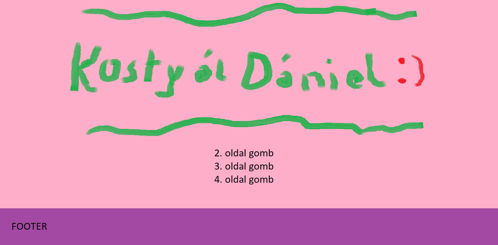
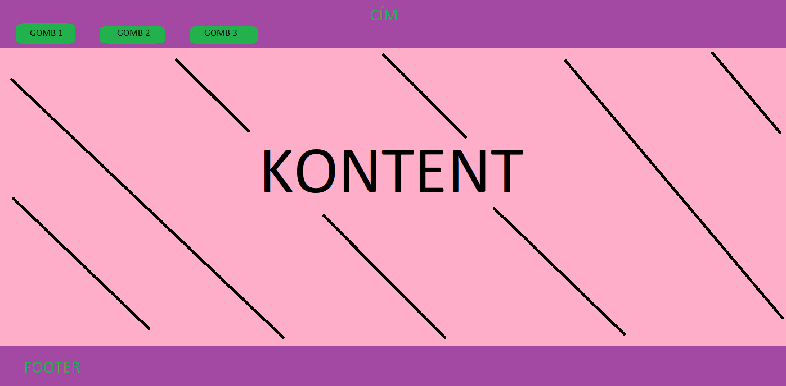
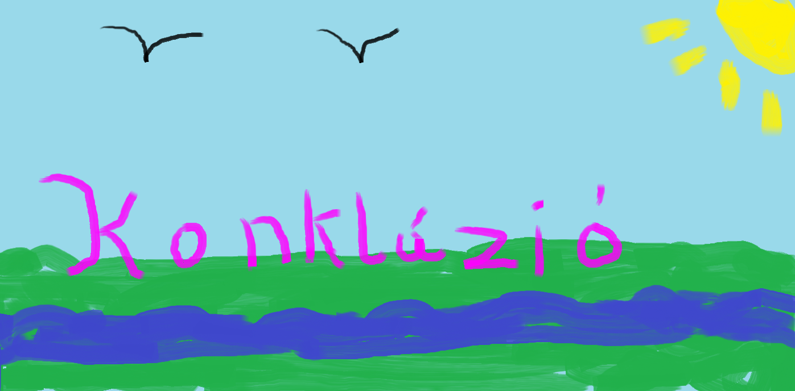
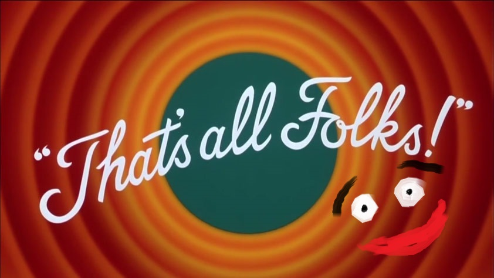

A főoldalt sikerült nagyjából olyanra megcsinálnom pontosan olyanra amilyenre akarta, ez nagyon boldoggá tett. Eredetileg a nevem írva lett volna, de találtam egy stílusosabb megoldást.

A "Bemutatkozás" "Képek" "Dokumentációt" hasonlóra kinézetűre akartam megcsinálni, ez véleményem szerint sikerült, a navigációs rész mindegyik oldalon jól mutat, a kontent megalkotása során a gridekkel volt itt-ott problémám, valamint képek elhelyezésével, de az internetnek köszönhetően egy pár kereséssel meg tudtam oldani ezeket a problémákat. Néhol a szöveg stilizálásával is akadtak gondok, ezt ugyanúgy a google segítségével megoldottam.

Mindent összevetve, élveztem a weblap csinálását, nem az volt a fő célom, hogy mindent tökéletesre megcsináljak, hanem az hogy összekössem a kellemeset a hasznossal, és örülök, hogy ez sikerült. Így a 14. héten jól esett, hogy ezzel töltöttem az időmet.
Felhasznált oldalak:
www.w3schools.com
www.stackoverflow.com

Felhasznált oldalak:
www.w3schools.com
www.stackoverflow.com